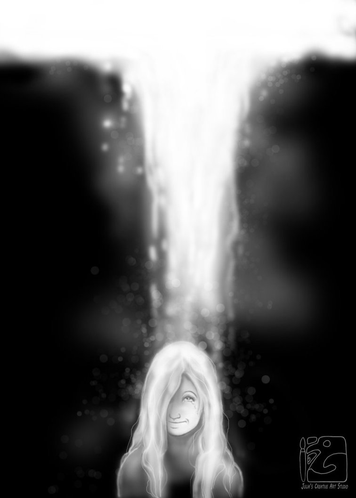

Corbin Buff
"As though drawn down in rains from heaven"
Corbin Buff
I know the light braided into blood and bone,
birds circling daily in the autumn of your eyes.
Body of fruit and moonbeams and endless summer—
all of it outward-blooming, pure as the silence of stones,
overflowing with a quiet grace
like the slow and ceaseless turning of the Earth.
Before there was only smoke and secrets,
vanishing acts and small betrayals.
I knew only of spells cast at night,
dark words spat at the turn of a back.
Now I forget it all with each sacred sighting
of just a fleeting gaze or smile. I forget it all
for I have known the light braided into blood and bone,
the light leaking out and over you
as though drawn down in rains from heaven.
